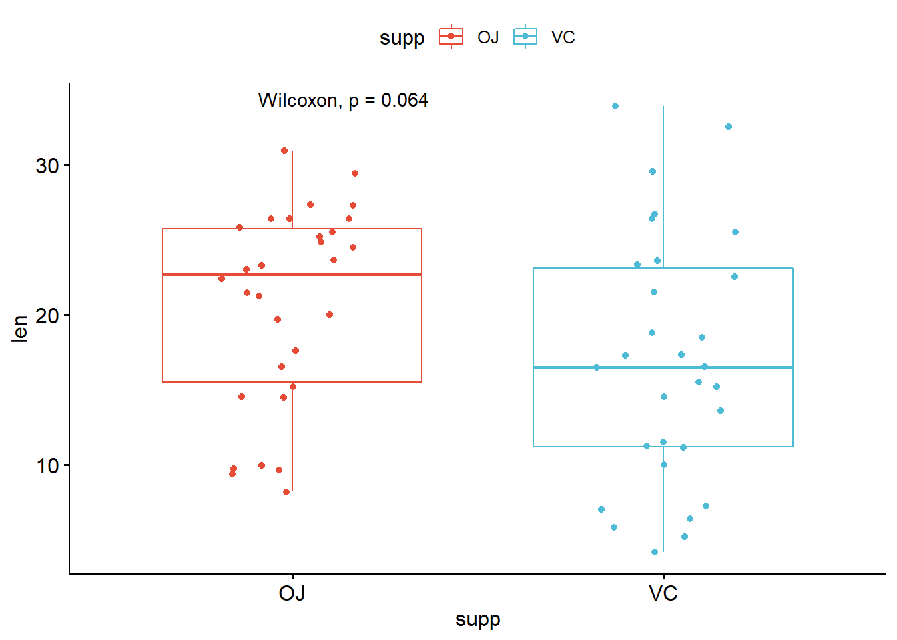
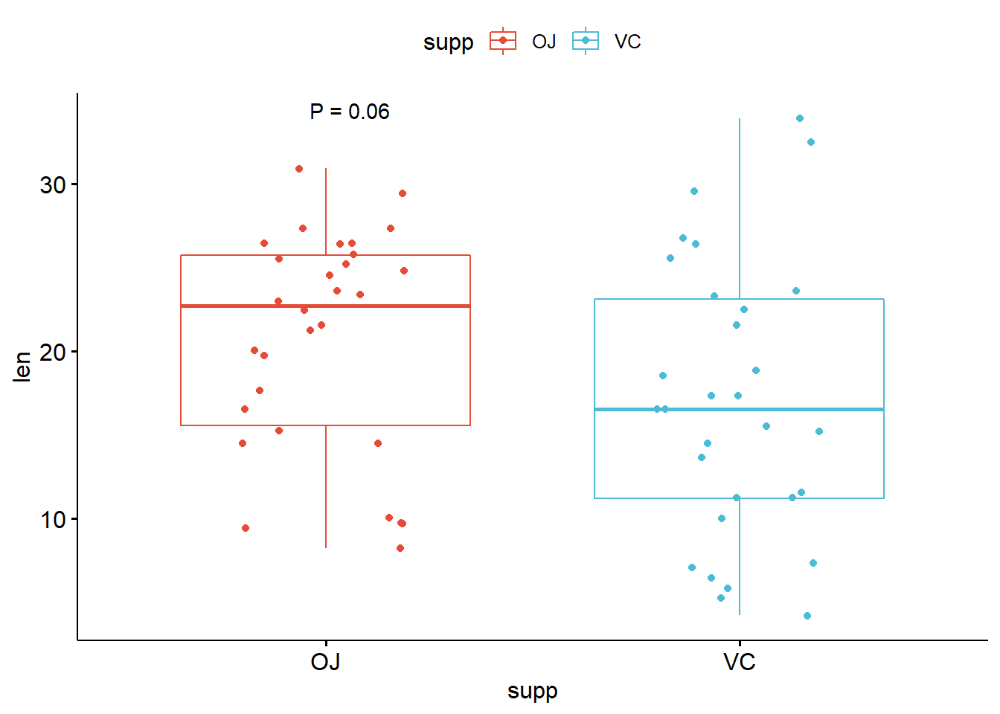
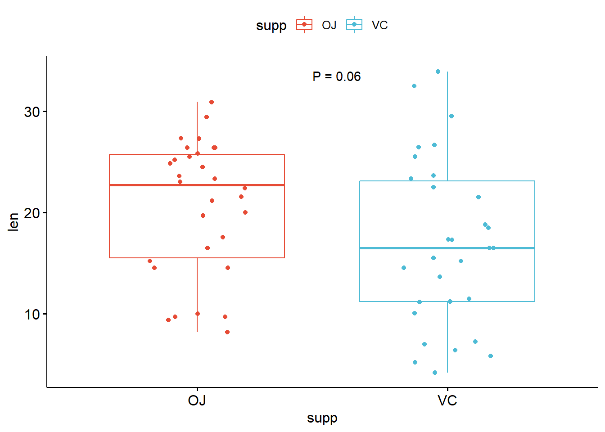

ggplot图 P 值格式化
陈雄峰 · 2021-07-08
ggpubr 包 stat_compare_means() 函数常用于对 ggplot图形添加统计比较结果方法，下面介绍
如何对其展示的P值进行格式化。
library(ggpubr)
#> Warning: 程辑包'ggpubr'是用R版本4.0.5 来建造的
#> 载入需要的程辑包：ggplot2
data("ToothGrowth")
head(ToothGrowth)
#> len supp dose
#> 1 4.2 VC 0.5
#> 2 11.5 VC 0.5
#> 3 7.3 VC 0.5
#> 4 5.8 VC 0.5
#> 5 6.4 VC 0.5
#> 6 10.0 VC 0.5
# Two independent groups
#:::::::::::::::::::::::::::::::::::::::::::::::::
p <- ggboxplot(ToothGrowth, x = "supp", y = "len",
color = "supp", palette = "npg", add = "jitter")
# Add p-value
p + stat_compare_means()
可以看到图中是以检验方法+P值的结果来展示 P 值的，那么该如何修改它呢？关键是修改函数中的 label 参数和掌握匿名变量 ..p.format..，下面是一个简单的修改：
p + stat_compare_means(aes(label = paste0("P = ", round(as.numeric(..p.format..), 2))))
这里需要注意的是 ..p.format.. 是一个字符串，如果我们需要修改它展示的数值位数，需要先进行转换。
进一步我们还可以根据运行 ?stat_compare_means 提供的说明修改 P 值的位置：
p + stat_compare_means(aes(label = paste0("P = ", round(as.numeric(..p.format..), 2))),
label.y = 33, label.x = 1.5)
大家可以想一下为什么 label.x = 1.5 可以将标签移动到两组的中间？